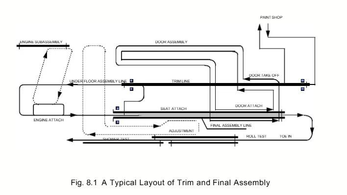
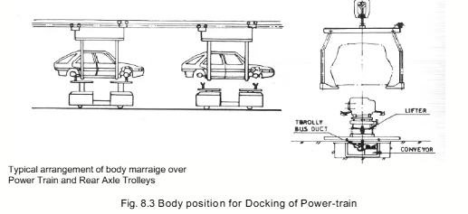
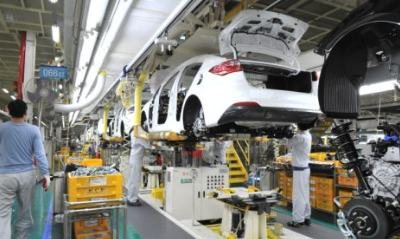
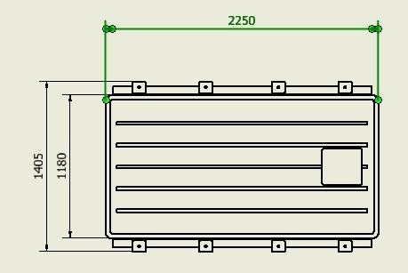
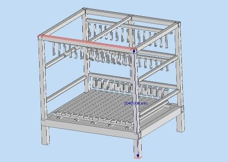
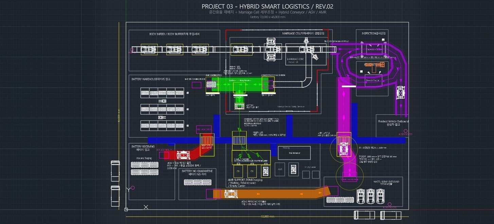
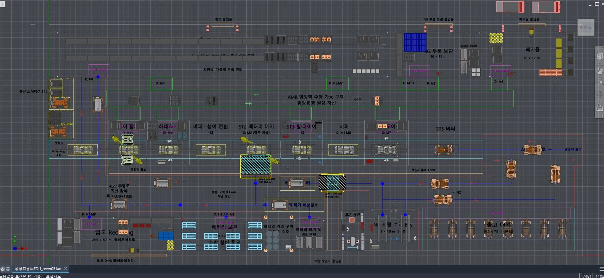

1.2
ICE ASSEMBLY LINE REFERENCE
01REFERENCE DRAWINGS



1.2
ICE ASSEMBLY LINE REFERENCE
02LINE COMPOSITION
일반적으로 TRIM LINE, CHASSIS LINE, FINAL ASSEMBLY LINE으로 구성
TRIM LINE


DOOR TAKE OFF > DOOR ASSEMBLY LINE
- HAMESSES AND CONTROLS-OTHER ELECTRICAL
- PADAL ASSEMBLY, INSULATOR
- AIR DUCT, HEATER, HEAD LINER
- WEATHER-STRIP, HOM, STOP CABLE
- WIPER LINK, WASHER TANK
- CONDENSER, REAR SET BELL, RADIATOR INSULATOR
CHASSIS LINE

- BRAKE TUBE, FILLER NECK, SPLASH SHILED
- FUEL PIPE, FUEL TANK, CANISTER
- REAR AXLE, STABILIZER
- CLUTCH TUBE, HEAT PROTECTOR, ENGINE
- KNUCKLE, TIE ROD
- EXHAUST, UNDERCOVER
- TIRE, FRONT / REAR SEAT
- FRONT/ REAR BUMPER
FINAL ASSEMBLY LINE

- REAR PILLAR TRIM, TRUNKLID LATCH
- LICENSE PLATE LAMP, RADIATOR, HOSE
- HEAT HOSE, STEERING SHAFT
- PARKING BRAKE, GAMISH
- REAR COMBINATION LAMP, SUNVISOR
- BATTERY CABLE, SLINCER
- FRONT TURN SINGNAL LAMP, CONSOLE BOX
- FRONT / REAR GLASS, ROOF MOLDING
- CONSOLE BRACKET, CARPET, TRINK ROOM TRIM
- SEAT BELT, CENTRE PILLAR TRIM
- AIR-CONDITIONOR PIPE
- GLOVE BOX, BATTERY TRAY, SEATBELT ANCHOR COVER
- AIR CLEANER, FRONT / REAR SEAT
- FRONT GRILLE, DRIP MOLDING
- COMBINATION METER, A/C GAS
1.5
OBJECTS & EQUIPMENT
01TARGET OBJECTS

차체
- SIZE
- 3,765 × 1,648 × ___ MM
- WEIGHT
- 3,000 KG
- 운반
- 오버헤드 컨베이어 · AGV(완성차)

배터리 팩
- SIZE
- 2,250 × 1,405 × ___ MM
- WEIGHT
- 550 KG
- PE 모듈 · 서스펜션
- 약 350 KG
- 배터리 키팅
- 약 950 KG


팔레트 · 카트
- 팔레트 SIZE · 무게
- 1980 X 1660 X 2040
- 키트 카트 · 빈 카트
- 작성 예정
- 모델링 파일
- 설계 / 미스미 다운로드 예정
1.5
OBJECTS & EQUIPMENT
02AMR / AGV SELECTION
AGVKUKA KOM UTV-3 E575 7000

- SIZE
- 3,220 × 2,050 × 650 MM
- PAYLOAD
- 7,000 KG
- MAX VEL
- 0.833 M/S
- 회전 반경
- 1.3 M
- 운행 / 충전
- 6 H / 2 H
AMRKUKA KMP 3000P

- SIZE
- 2,200 × 1,200 × 370 MM
- PAYLOAD
- 3,000 KG
- MAX VEL
- 1.0 M/S (설계)
- 회전 반경
- 1.3 M
- 운행 / 충전
- 6~8 H · 3,000 W 유도충전
03SELECTION RATIONALE
FDU 호환
INVENTOR FDU의 KUKA 장비 자산 활용 > 2D · 3D 일치 검증 용이
통합 관제
AGV · AMR 동일 제조사 > 하나의 관제(ACS)로 교차 · 병목 관리
충전 방식
AMR 유도충전 > 대기 위치 기회 충전, DOCK 3식 제약 완화
PAYLOAD
완성차 · 배터리 키팅은 AGV, 400 KG 이하 서열 키트는 AMR
2.2
LAYOUT OPTIONS
LAYOUT 대안 비교
LAYOUT A

LAYOUT B

3.2
2D / 3D COMPARISON
같은 앵글(평면도)로 나란히 놓아 2D LAYOUT과 3D DIGITAL FACTORY의 일치성을 확인
2D · AUTOCAD MECHANICAL
3D · INVENTOR + FDU
